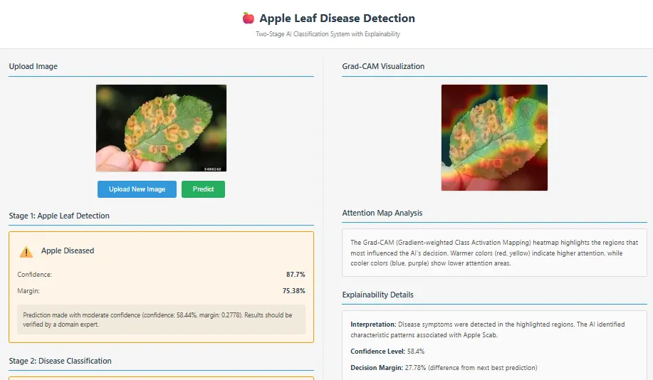
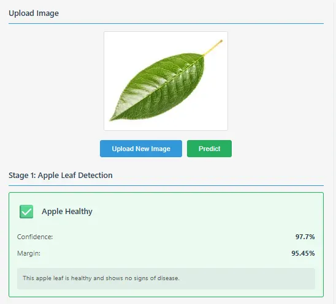
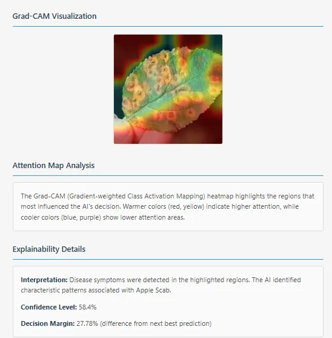
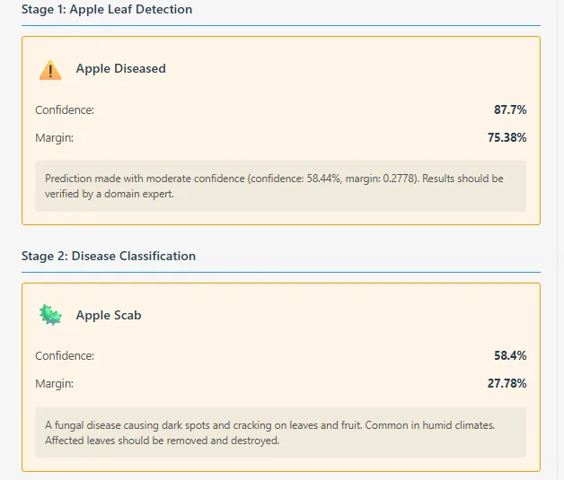

The Engineering Premise
In precision agriculture, the rapid identification of crop pathogens is critical to preventing devastating yield losses. However, the adoption of deep learning in agronomy often falters due to the "black box" nature of neural networks. Agronomists cannot blindly trust a model's prediction without understanding exactly why that prediction was made.
The Apple Leaf Disease Detection System was engineered to solve two distinct challenges: computational efficiency in rejecting out-of-distribution data, and Visual Explainability (eXplainable AI - XAI). By building a hierarchical inference pipeline (`unified_classifier.py`) and an aggressive image-processing engine, this project bridges the gap between raw predictive math and human-interpretable diagnostics.
Robust Data Preprocessing Pipeline
A neural network's accuracy is inextricably linked to the quality of its inputs. To ensure consistency across both classification stages, I implemented a centralized preprocessing module (`utils/image_processing.py`).
When a user uploads an image, the pipeline utilizes the Pillow (`PIL`) library to dynamically compute the image's dimensions and execute a perfect center-crop. This removes extraneous background noise and focuses entirely on the central leaf object. The image is then passed through a `LANCZOS` resampling filter to resize it to a strict `224x224` resolution.
Crucially, before tensor injection, the RGB channels are scaled into a `[-1, 1]` continuous distribution via the `EfficientNet` preprocessor, aligning the user's raw upload with the mathematical distribution the model was originally trained upon.
The Unified Two-Stage Inference Flow
A naive single-stage classifier often fails in production because users will inevitably upload irrelevant images (e.g., tractors, faces, or non-apple leaves). The model will confidently misclassify this noise as a disease. To prevent this, I architected a rigorous Two-Stage Inference Pipeline orchestrated by `unified_classifier.py`.

Stage 1: Domain Gatekeeper (EfficientNet)
The first stage serves as an algorithmic bouncer. Powered by a transfer-learned EfficientNet architecture, it calculates confidence thresholds and top-2 margin differentials to classify the tensor into one of three states:
- Not_Apple_Leaf: The request is immediately rejected. The API halts and returns a rejection payload, saving downstream GPU/CPU resources.
- Apple_Healthy: The pipeline terminates with a positive healthy result.
- Apple_Diseased: The leaf is valid but infected. The script measures the latency, logs the Stage 1 confidence matrix, and invokes Stage 2.
Stage 2: Pathological Classification
Only when Stage 1 explicitly flags a diseased state is the Stage 2 `leaf_classifier.py` invoked. This custom Convolutional Neural Network uses a `256x256` input to differentiate between highly similar fungal infections: Apple Scab, Black Rot, and Cedar Apple Rust.

Advanced Grad-CAM Explainability (XAI)
Standard Gradient-weighted Class Activation Mapping (Grad-CAM) often fails in botanical imagery because the network tends to highlight high-contrast leaf edges rather than the actual internal fungal lesions. To solve this, I wrote an intensely customized pipeline (`gradcam_disease_focused.py`).

The class automatically traces the model architecture backwards to locate the final convolutional layer. It then computes gradients focused entirely on the predicted disease class. From there, I engineered an aggressive, multi-step post-processing algorithm using OpenCV (`cv2`) to clean the resulting heatmaps:
- Edge & Shadow Suppression: A Sobel gradient magnitude mask (via Otsu's thresholding) detects physical leaf edges. A brightness threshold (sub-20th percentile) isolates dark background shadows. Both are used to explicitly penalize and suppress activation noise.
- Spatial vs. Feature Weighting: The final heatmap tensor is calculated by heavily favoring spatial location over raw feature importance (a strict 70/30 weighting split) to force tight localization.
- Morphological Cleaning: The tensor undergoes a Bilateral Filter for edge-preserving smoothing, followed by morphological closing (to fill gaps in the lesion highlight) and opening (to delete tiny isolated artifacts).
- CLAHE Enhancement: Contrast Limited Adaptive Histogram Equalization (with a clip limit of 2.0) is applied to make the thermal colors pop against the original image.
Flask Backend & Edge Deployment
The inference engine is wrapped in a production-ready Flask REST API (`app.py`). The `/predict` endpoint handles secure multipart file uploads with strict 16MB limits. The JSON payloads returned by the unified classifier contain deeply structured data: Stage 1 and Stage 2 confidence margins, milliseconds latency tracking, textual warnings if Stage 1 confidence was borderline, and the static path to the newly generated Grad-CAM overlay.

TFLite Model Quantization
Agricultural models frequently run in low-connectivity environments (mobile edge devices). To prove the system's deployability, I executed a rigorous post-training dynamic quantization phase.
The massive 16.33 MB Keras model was compressed down to a 4.36 MB TensorFlow Lite (TFLite) binary. This achieved a staggering 3.74x size reduction (73.3% smaller) and slashed CPU inference latency from 170ms down to 52.88ms, all while retaining an acceptable ~86% baseline accuracy—proving the architecture's viability for smartphone deployment.
Conclusion
The Apple Leaf Disease Detection System successfully bridges the gap between academic deep learning and practical, trustworthy software engineering. By implementing a strict hierarchical filtering pipeline, the system proactively defends against out-of-distribution junk data.
Furthermore, by refusing to treat the neural network as a black box—instead forcing it to visually explain its logic via heavily post-processed, OpenCV-enhanced Grad-CAM heatmaps—the project demonstrates a mature, safety-first approach to deploying Artificial Intelligence in critical real-world environments.